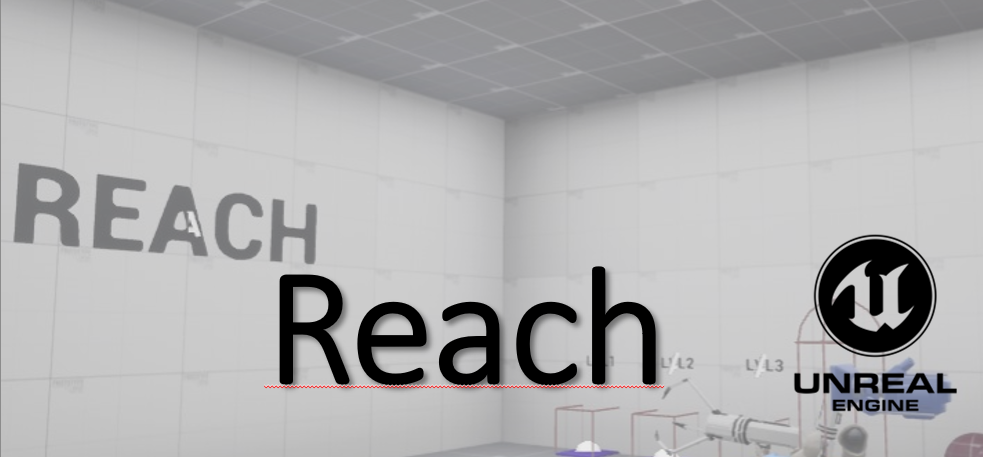
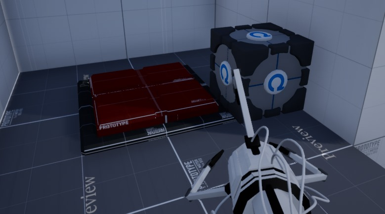
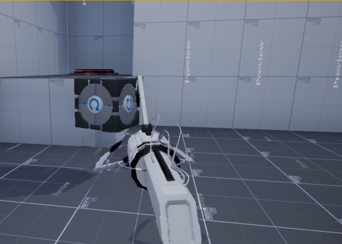

Games created
Reach
Reach est le plus gros jeu que j'ai créé sur Unreal Engine, il s'agit même de mon projet de fin d'études.
C'est un jeu de puzzle, portal-like avec deux niveaux, il y a eu de nombreuses fonctionnalitées ainsi que beaucoup de travail de modélisation 3D. Notamment, l'utilisation de Blender afin de créer un squelette de l'outil de récupération de cube. S'ajoute à cela une prise en main totale au clavier, manette mais surtout en réalité virtuelle
